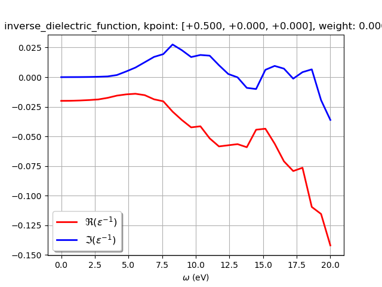
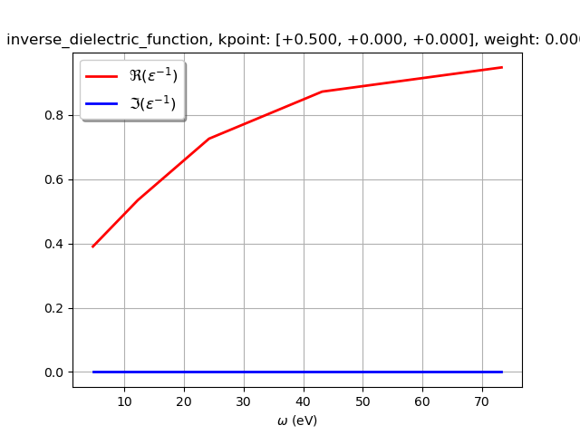
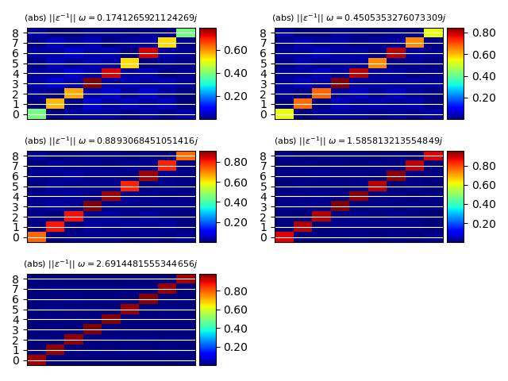

Note
Click here to download the full example code
SCR matrix¶
This examples shows how to plot the matrix elements of the inverse dielectric function stored in the SCR file (optdriver 3) See also plot_scr.py for the optical spectrum.
- 
- 
- 
Out:
======================== inverse_dielectric_function ========================
K-point: [+0.500, +0.000, +0.000], weight: 0.000
Number of G-vectors: 9
Total number of frequencies: 35 (real: 30, imaginary: 5)
Real frequencies up to 0.73 (eV)
Imaginary frequencies up to 2.69 (eV)
/Users/gmatteo/git_repos/pymatgen/pymatgen/util/plotting.py:550: UserWarning: Matplotlib is currently using agg, which is a non-GUI backend, so cannot show the figure.
plt.show()
/Users/gmatteo/git_repos/pymatgen/pymatgen/util/plotting.py:550: UserWarning: Matplotlib is currently using agg, which is a non-GUI backend, so cannot show the figure.
plt.show()
import abipy.data as abidata
from abipy.abilab import abiopen
with abiopen(abidata.ref_file("sio2_SCR.nc")) as ncfile:
#print(ncfile)
# The SCR file contains a structure and electron bands in the IBZ.
# We can thus use the ebands object to plot bands + DOS.
#ncfile.ebands.plot()
# Read e^{-1}_{G1, G2}(k, omega)
kpoint = [0.5, 0, 0]
em1 = ncfile.reader.read_wggmat(kpoint)
print(em1)
gvec1 = [1, 0, 0]
gvec2 = [-1, 0, 0]
# Plot matrix element as function of frequency along the real axis
em1.plot_freq(gvec1=gvec1, gvec2=gvec2, waxis="real")
# Plot data along the imaginary axis
# Note that gvectors can also be specifined in terms of their index.
em1.plot_freq(gvec1=0, gvec2=0, waxis="imag")
# Plot e^{-1}_{G1, G2} along the imaginary axis.
em1.plot_gg(wpos="imag")
Total running time of the script: ( 0 minutes 0.619 seconds)